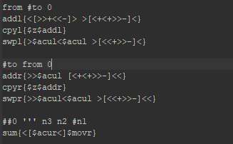
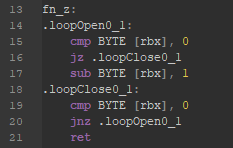
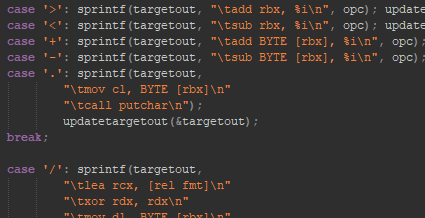

Summary
Context
Brainf**k is the name of an actual programming language. It is meant to be a silly language, and it's so simple that it's difficult to do anything useful in it. However, its simplicity lends it to being a good learning tool.
....................
This was a personal individual project that I worked on over the course of a few weeks during my freshman year.
Process
The process of implementing this project was casual. There was little planning, and I did what I felt like in each stage of development.
....................
Like the ray tracer project, I would say this process is adequate for a casual project like this.
Task
The task was to write a compiler that turns brainf**k code into assembly code.
Results/Deliverable
The final product was a command-line program that takes a brainf**k file and produces an assembly file for further compilation.
....................
I also added a feature to the language that didn't previously exist, that feature being “procedures” to group pieces of code.
Time/Schedule
Being a casual project, there were no hard deadlines or schedules. I worked on this project on-and-off over a few weeks in my freshman year.
Constraints/Challenges
Like the ray tracer project, using the C language for this project was a self-imposed constraint to improve my knowledge of C.
....................
Producing assembly (rather than interpreting) the brainf**k code was another challenge. Producing assembly is more difficult than writing an interpreter.
|
Insights
Things Done Well
I made a working brainf**k compiler, and it supports a feature that wasn't in the original language.
....................
Turning the input code into executable assembly is probably what I did best, I even included some minor optimization of the input code.
....................
Something else I did well was making the tool work like other regular command-line compilers. You just have to supply the filename, and it generates the resulting assembly code in a new file to be further compiled. The alternative would be something like forcing the user to type their code In the terminal rather than supplying it in a file.
Skills Gained/Improved
- I vastly improved my assembly knowledge. Particularly, the compiler emits assembly of the “nasm” format.
- I also improved my understanding of the C programming language.
- Most of all, I gained important knowledge about how to write compilers in general. While this project only compiled a simple language, the skills I've gained from it can be applied to more useful languages.
Improvement Opportunities
This project went very well, so there was little room for improvement in the final result. One minor annoyance is the syntax for calling procedures.
....................
Currently, you prepend a dollar sign to the procedure-name for it to be called. While it's only a minor detail, I believe that the extra dollar sign is ultimately unnecessary; it was just a quick fix for the problem of figuring out whether a procedure is being defined or called.
|
Gallery
A snippet of brainf**k code in a file.

Some assembly code generated by my compiler.

A snippet of the compiler code which generates assembly depending on the input code.

|
Technical Details
The way procedures work
Pieces of brainf**k code can be put between two curly braces and a leading name to define a procedure. E.G.,
addl{
<[>>+<<-]>
>[<+<+>>-]<
}
Once a procedure is defined, you can call it later by writing its name with a dollar sign in front (E.G, $addl). Procedures can be called from anywhere; even inside other procedures.
Besides procedures, I also added a custom instruction. The slash character '/' prints a specified number.
In the original brainf**k language, you are only able to print the ascii character of numbers, and not the numbers themselves.
If you're familiar with C programs: here is the latest source code for this project.
|